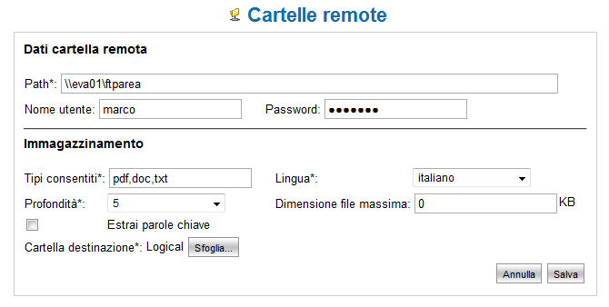
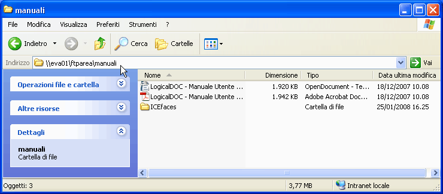

Importazione Documenti da Cartelle Remote |
| La funzionalità di Importazione da Cartelle Remote è disponibile solamente per la versione commerciale di LogicalDOC: LogicalDOC Enterprise Edition. Consulta il sito di LogicalDOC: www.logicaldoc.it per maggiori informazioni. | |
Quando LogicalDOC Enterprise Edition (LogicalDOC EE) viene installato all'interno di una rete costituita anche da altri
computer che condividono cartelle, è possibile importare automaticamente tutti i
documenti condivisi mediante la funzione “Cartelle remote”.
Questa caratteristica di LogicalDOC EE è stata testata con tutte le normali condivisioni
Windows ed anche con le condivisioni SAMBA che è possibile configurare sui
sistemi UNIX/Linux.
Configurazione delle cartelle remote
Per accedere alla pagina operativa seguite il percorso: Amministrazione --> Cartelle remote.
In questa area
viene visualizzato l'elenco delle cartelle remote attualmente impostate.
In alto a sinistra l'icona "Nuova cartella remota" consente l'accesso alla maschera per l'inserimento di nuove cartelle.
E' possibile intervenire sulle varie cartelle configurata utilizzando le icone a destra del percorso della cartella.
Le tre icone svolgono le seguenti funzioni: modifica, attivazione/disattivazione importazione, cancellazione cartella remota.

Illustrazione 02: Impostazioni di una cartella remota
La parte superiore della scheda consente di inserire i dati di connessione alla cartella ed in particolare:
- Il percorso remoto (Path)
- Username (opzionale)
- Password (opzionale)
Il percorso remoto (Path) rappresenta la cartella che viene condivisa sul computer remoto, da notare che gli elementi del percorso sono separati dal carattere '\'(se utilizzate '/' questo verrà comunque convertito in '\').
Il nome del computer è l'identificativo con cui la macchina viene indirizzata sulla rete locale(è preceduto dai caratteri '\\' in testa come di norma sui sistemi Windows).
L'illustrazione precedente mostra la configurazione della cartella remota ftparea sul server eva01.

Illustrazione 03: Cartella remota da Windows
Qualora la cartella remota fosse protetta, è anche possibile impostare username e password per l'autenticazione.
La parte inferiore della scheda consente di impostare le informazioni per l'acquisizione dei documenti e quindi:
- Le estensioni consentite(separate da virgola)
- La lingua in cui verranno importati i documenti (molto rilevante ai fini della ricerca)
- Il livello di profondità
- La cartella dell'archivio documentale in cui salvare i documenti
- La dimensione massima dei documenti da considerare
- Se estrarre o meno le parole chiave
Una volta salvate le impostazioni, ad intervalli regolari la cartella remota e tutte le
sue sotto-cartelle fino al livello di profondità impostato, verranno esplorate alla
ricerca di documenti. I soli documenti con estensione ammessa verranno indicizzati
e inseriti nell'archivio documentale a partire dalla cartella in archivio impostata.
E' importante considerare il fatto che tutte le sotto-cartelle della condivisione remota
verranno replicate anche nell'archivio documentale di LogicalDOC.